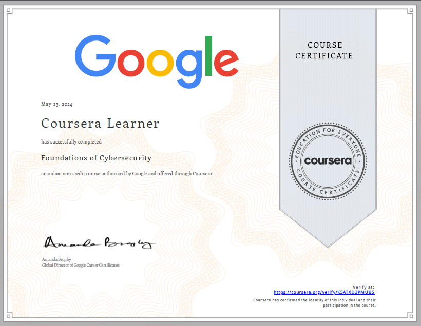
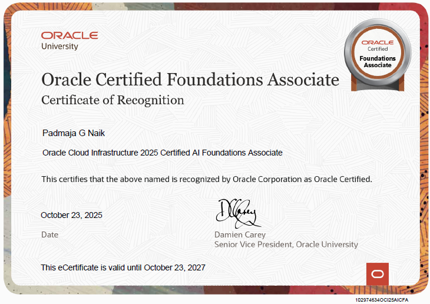
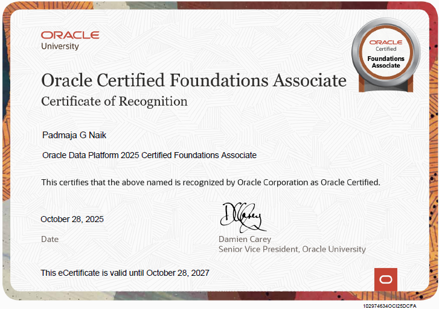
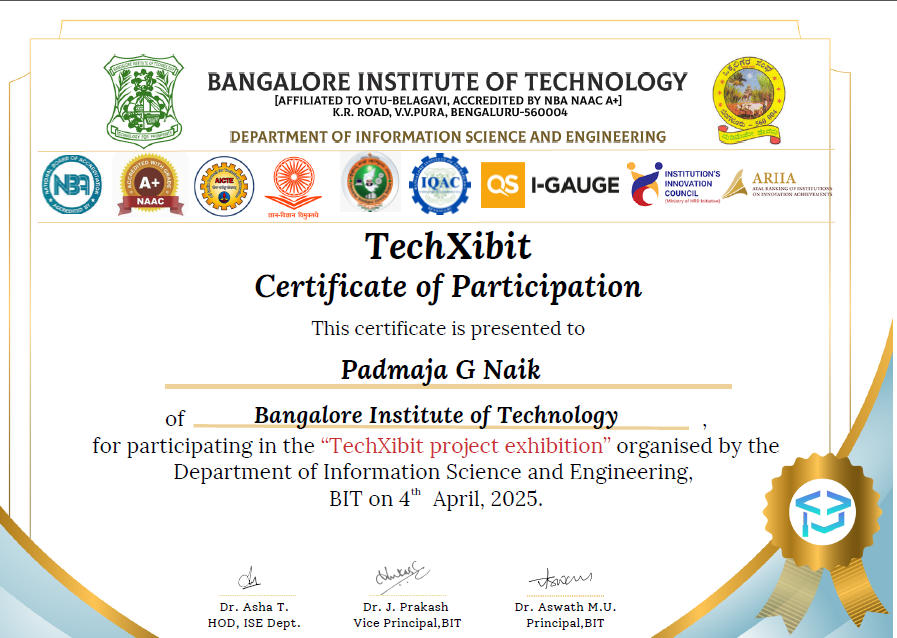
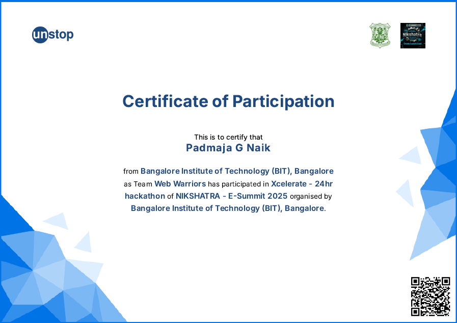

Completed the first course in the Google Cybersecurity Professional Certificate, covering core
security concepts, common threats, network and system security basics, and the role of security
analysts in protecting organizations.
Cybersecurity
Security Fundamentals
Risk Management
Network Security
Completed a virtual job simulation focused on software engineering tasks such as project
setup, API integration, debugging, and working with backend services, mirroring workflows
used by engineers at JPMorgan Chase.
Software Engineering
APIs
Backend
Industry Simulation

Validates foundational knowledge of Oracle Cloud Infrastructure services and AI concepts,
including working with OCI resources, data services, and AI/ML capabilities for building
intelligent cloud applications.
Oracle Cloud
Cloud Infrastructure
AI Foundations

Demonstrates understanding of Oracle’s data platform services, including data storage,
processing, and analytics options used to design modern data solutions on Oracle Cloud.
Data Platform
Data Engineering
Databases
Analytics

Participated in the TechXibit project exhibition organized by the Department of Information
Science and Engineering, presenting an engineering project and interacting with faculty,
peers, and visitors for feedback.
Project Exhibition
Presentation Skills
Teamwork

Participated as part of Team Web Warriors in the Xcelerate 24-hour hackathon
during NIKSHATRA – E-Summit 2025, building and pitching a web-based solution under time
constraints in a competitive environment.
Hackathon
Web Development
Collaboration
Problem Solving